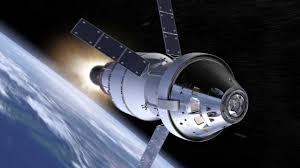
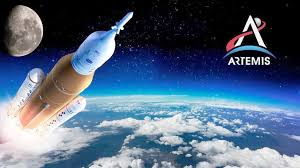
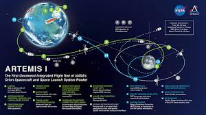

Mision Artemis I (2022) Regreso a la Luna

Objetivo y contexto historico
Artemis I es la primera mision del programa Artemis de la NASA, que busca regresar a los humanos a la Luna y establecer una presencia sostenible. Esta mision no tripulada tenia como objetivo probar el cohete Space Launch System (SLS) y la nave Orion en un vuelo alrededor de la Luna, preparando el camino para futuras misiones tripuladas.
Desarrollo de la mision
Lanzada el 16 de noviembre de 2022 desde el Centro Espacial Kennedy, Artemis I duro 25 dias, 10 horas y 53 minutos, recorriendo aproximadamente 2.1 millones de kilometros. La nave Orion realizo dos sobrevuelos cercanos a la Luna y alcanzo una distancia record de 432,194 km de la Tierra. El 11 de diciembre de 2022, Orion regreso exitosamente, amerizando en el Oceano Pacifico .

Logros y preparativos futuros
Artemis I demostro la capacidad del SLS y Orion para realizar misiones lunares, validando sistemas criticos como el escudo termico de Orion durante la reentrada. Los datos recopilados seran fundamentales para las proximas misiones: Artemis II, que llevara astronautas alrededor de la Luna, y Artemis III, que planea un alunizaje tripulado.

Video sobre la mision
https://www.youtube.com/watch?v=vX-ThyaAkRg
REGRESAR